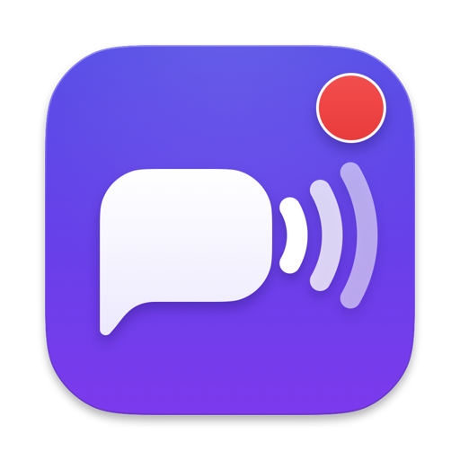

Hear your name, even when you're not listening.
NameAlert listens to calls and meetings on your Mac and alerts you the moment someone says your name or keyword.
Features
Works with your calls
Listens to system audio from meetings, calls, and videos, or to your microphone. It can listen continuously or only when another app uses your microphone.
Private by design
Speech transcription runs on your Mac, and your audio never leaves it. The words around a mention leave only if you set up ntfy, a Telegram call or a webhook — and only to the service you chose. There are no accounts, no ads, and no analytics.
Alerts your way
Get notified via system sounds, macOS notifications, persistent alarms, screen flashes, phone calls via Telegram, phone pushes via ntfy, or webhooks.
How it works
-
1. Set your keywords
Add your name, nicknames, or phrases, and configure matching sensitivity to Exact, Balanced, or Loose to catch near-misses.
-
2. Choose when to listen
Leave NameAlert running in your menu bar all day, or let it activate only when you join an active meeting.
-
3. Get alerted with context
When someone says your name, NameAlert alerts you immediately and shows what was said in the last 30 seconds of speech.
Requirements
Requires macOS 14 Sonoma or later on Apple silicon or Intel Macs. Free, private, and open source under the MIT license.